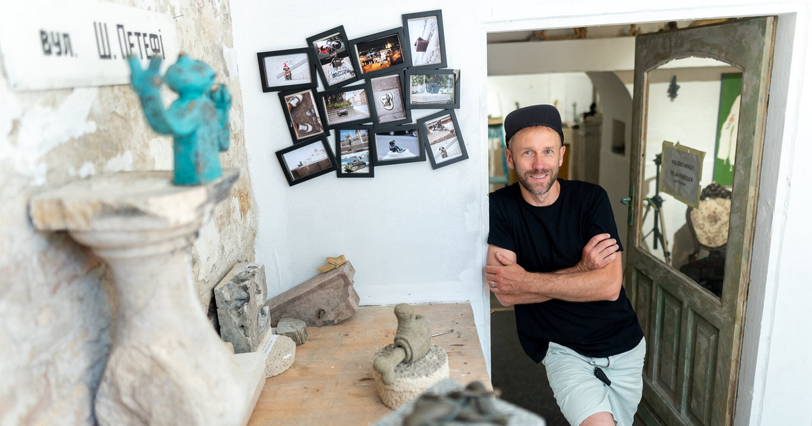
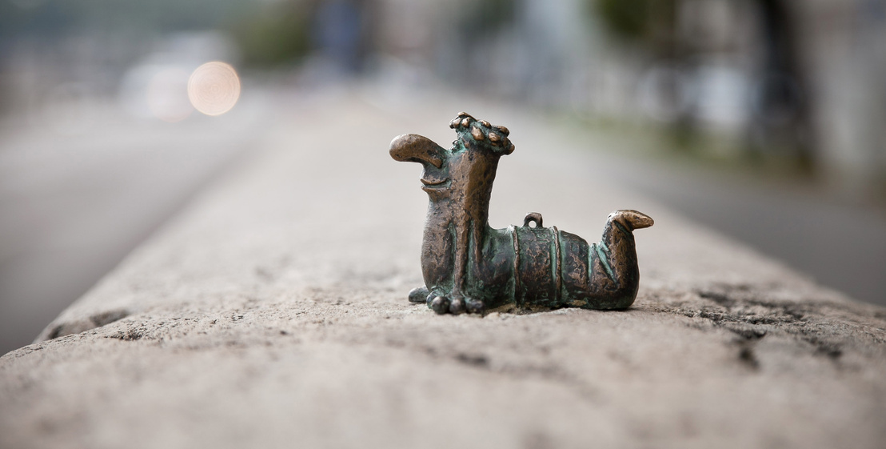
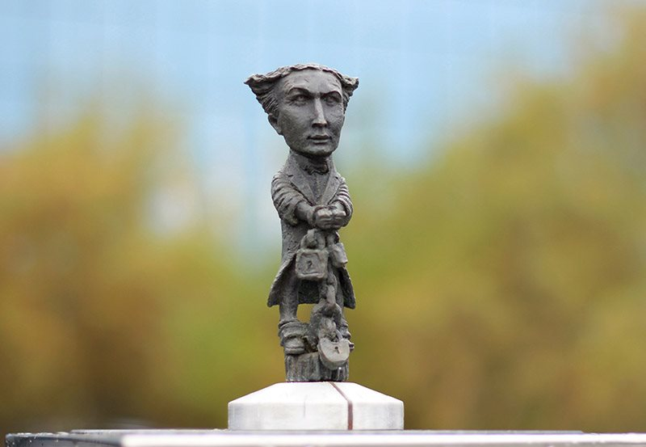
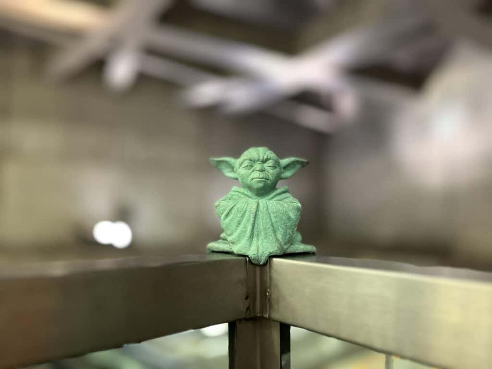
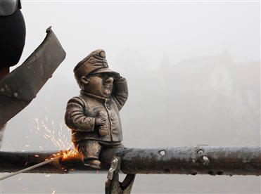
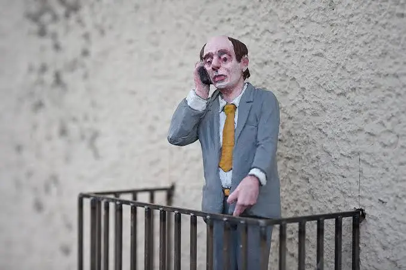
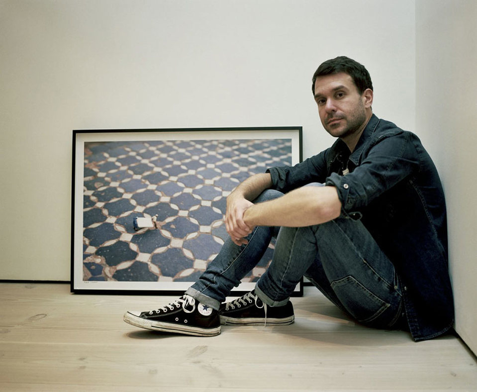
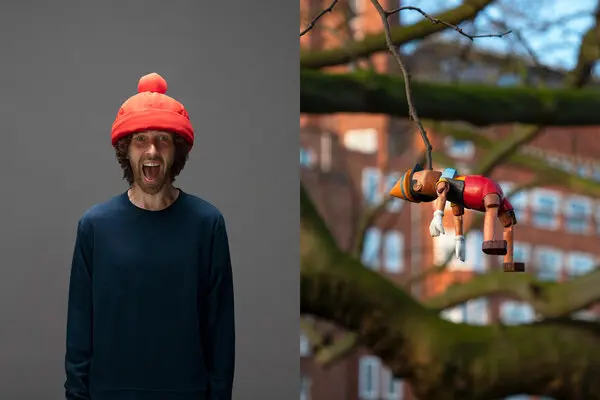

Kolodko Mihály (Mykhailo Kolodko) 1978-ban született
Ungváron, kárpátaljai magyar szobrászművész.
Tanulmányait Ukrajnában végezte, pályáját hagyományos köztéri szobrok és emlékművek
készítésével kezdte.
Nemzetközi ismertséget azonban apró
bronz miniszobraival szerzett, amelyeket 2016-tól főként
Budapesten, engedély nélkül helyezett el köztereken.
Ezek a néhány centiméteres alkotások humorosak, ironikusak, gyakran reflektálnak a
magyar és közép-európai történelemre, irodalomra, popkultúrára és társadalmi
kérdésekre. Figurái között történelmi személyek, meseszereplők és szimbolikus alakok is megjelennek.
A szobrok eldugott, mégis forgalmas városi pontokon bukkannak fel, felfedezésre ösztönözve a járókelőket.
Kolodko művészete a hivatalos, monumentális köztéri szobrászattal szemben az
intimitást és a közvetlenséget hangsúlyozza.
Miniszobrai mára Budapest és más európai városok kedvelt kulturális
látványosságai.
Kolodko Mihály főbb művei a köztéri miniszobrok és a humoros, ironikus figurák világába tartoznak.
Jelentős alkotásai közé tartozik a Főkukac, a Sajdik Ferenc rajzfilmfigurája a 4-es metró állomásán, a Harry Houdini, a K11 Művészeti és Kulturális Központ alkotása, a Yoda, a 4-es metró Gellért téri megállójában, valamint Svejk, a derék katona, a Gambrinus bár falán.
Ezek az apró bronzfigurák humorosak, ironikusak, gyakran reflektálnak a kortárs kultúrára és történelmi alakokra, és a járókelőket felfedezésre ösztönzik.
Kolodko művészete a hivatalos köztéri szobrászattal szemben az intimitást és közvetlenséget hangsúlyozza, miközben a miniszobrok szellemesen kapcsolódnak a városi környezethez.
Ma ezek a művek Budapest és más európai városok kedvelt látványosságai, és Kolodkót a kortárs köztéri művészet egyik legkülönlegesebb képviselőjeként tartják számon.





Isaac Cordal egy spanyol művész, apró, szürke figurákat helyez el városi terekben. Művei társadalomkritikusak, híres alkotásai a Cement Eclipses, mely az elidegenedést ábrázolja.

Slinkachu brit művész, a „Little People, Big City” sorozat alkotója, apró figurákkal készít humoros és szociálisan elgondolkodtató utcai installációkat, fotókon rögzítve.

Frankey kortárs vizuális művész, akinek munkái gyakran ötvözik a szobrászatot és a humoros narratívákat. A képen látható alkotása: „Pinocchio lóg a fán”, amely a hétköznapi tárgyakat groteszk és játékos formában ábrázolja.
Hans Van de Bovenkamp híres amerikai-holland szobrász, ismert a "Symphony" és "Menhir" sorozatairól, melyek dinamikus, hullámzó formákkal díszítik a köztereket.